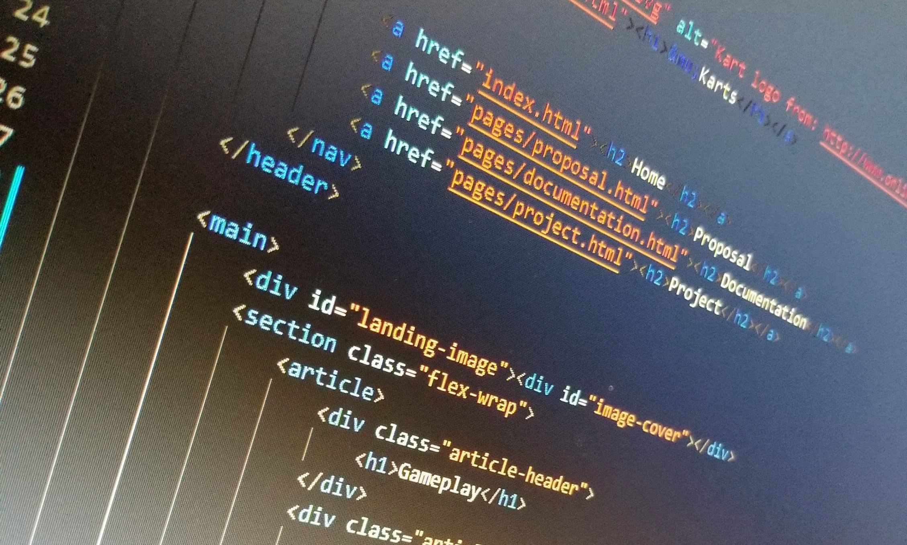

μKarts (MicroKarts) plays like any other top-down vehicle game; the arrow keys are used for movement and space is for the handbrake. MicroKarts also has a car upgrading system that allows you to upgrade things such as the speed, acceleration, and handling.
